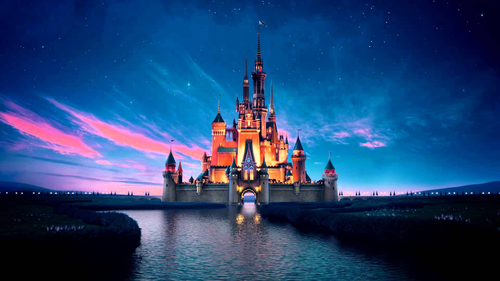

Walt Disney foi um produtor de cinema, diretor, roteirista e empresário norte-americano que ficou conhecido por criar um dos maiores universos de entretenimento do mundo. Em 1923, fundou, junto com seu irmão Roy O. Disney, a empresa que daria origem à The Walt Disney Company. Ele também foi um dos responsáveis pela criação do Mickey Mouse, em 1928, personagem que se tornou um dos símbolos mais famosos da Disney. Sua criatividade e imaginação transformaram a maneira como as pessoas conheciam as histórias de animação.
Os filmes da Disney conquistaram gerações com histórias emocionantes, personagens inesquecíveis e mensagens sobre amizade, amor, coragem e superação. Entre os clássicos estão Branca de Neve e os Sete Anões, Cinderela e O Rei Leão, além de sucessos mais recentes, como Frozen, Encanto e Moana. A empresa também produz filmes da Pixar e outras grandes franquias, como Marvel e Star Wars. Com suas animações e produções cinematográficas, a Disney continua encantando pessoas de diferentes idades ao redor do mundo.
Os parques temáticos da Disney são conhecidos por proporcionar experiências mágicas para visitantes de todas as idades. O primeiro parque, a Disneyland, foi inaugurado em 1955, na Califórnia, nos Estados Unidos. Atualmente, existem parques em diferentes partes do mundo, como Flórida, Paris, Tóquio, Hong Kong e Xangai. Neles, os visitantes podem encontrar brinquedos, desfiles, shows, personagens famosos e cenários inspirados em filmes e histórias encantadoras, tornando cada visita uma experiência especial.
As músicas da Disney são uma parte muito importante de suas histórias, ajudando a transmitir emoções e tornar os personagens ainda mais marcantes. Canções como Let It Go, de Frozen, Hakuna Matata, de O Rei Leão, e Under the Sea, de A Pequena Sereia, ficaram famosas em diversos países. Muitas dessas músicas são lembradas por suas letras inspiradoras, melodias envolventes e mensagens positivas. Além de fazerem parte dos filmes, elas também são apresentadas em espetáculos e parques temáticos, criando momentos mágicos para os fãs.